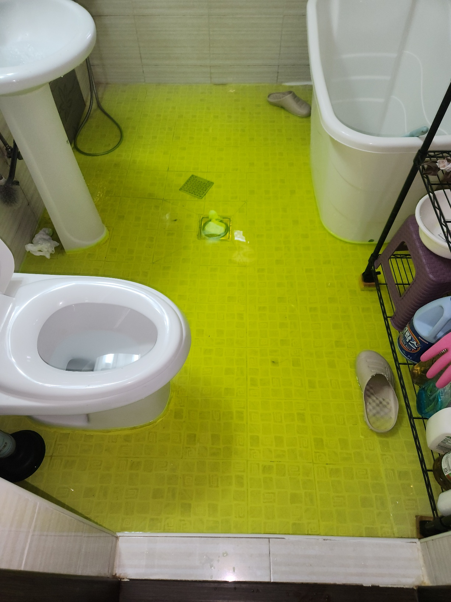

아래층 천장에 얼룩이 생겼다는 연락을 받고 위층 화장실을 점검한 현장입니다. 위층 세대는 최근 몇 년간 화장실 배관에 별다른 문제가 없었다고 하셨지만, 아래층 얼룩이 화장실 바로 아래쪽에 위치해 있어 화장실 누수를 우선 의심하고 점검을 진행했습니다.
먼저 배수구를 막고 물을 채워 일정 시간 수위 변화를 지켜보는 담수테스트를 진행했는데, 시간이 지나며 수위가 눈에 띄게 줄어드는 것을 확인했습니다. 정확한 지점까지는 육안으로 알기 어려워, 이어서 열화상 카메라로 바닥면 전체를 촬영했습니다. 물이 스며든 부분은 주변보다 미세하게 온도가 낮게 나타나는데, 배수구 인근 특정 구간의 온도가 다르게 표시되는 것을 확인해 누수 지점을 좁힐 수 있었습니다.
담수테스트로 누수 여부를, 열화상검사로 위치를 함께 확인해 불필요하게 바닥 전체를 뜯지 않고도 정확한 지점만 개방해 작업했습니다. 확인된 지점만 최소한으로 개방해 원인을 제거하고 방수 처리까지 마무리한 뒤, 다시 담수테스트로 수위 변화가 없는 것을 최종 확인했습니다.
담수테스트만으로는 누수 여부는 알 수 있어도 정확한 위치까지 특정하기는 어렵습니다. 반대로 열화상검사만으로는 온도 차이가 배관 누수 때문인지 다른 요인 때문인지 헷갈릴 수 있습니다. 두 검사를 함께 진행하면 한쪽 결과를 다른 쪽으로 검증할 수 있어 오진 가능성을 크게 줄일 수 있습니다. 용이동을 비롯한 인근 아파트 단지 화장실누수 현장에서는 이렇게 교차 검증하는 방식을 기본으로 적용하고 있습니다.
아파트는 아래층과 바로 연결되는 구조라 화장실누수를 방치하면 이웃 세대 피해로 번질 수 있습니다. 천장 얼룩이나 누수 의심 증상이 있으시면 빠르게 검사받아 보시길 권해드립니다.
확인된 지점만 최소한으로 개방해 작업하고, 작업 후에는 다시 검사를 진행해 이상이 없는지 재확인합니다. 평택 용이동을 비롯한 아파트 단지에서 아래층 천장 얼룩이 있으시면 빠르게 상담 받아보세요.
비슷한 증상으로 문의하실 곳을 찾고 계신다면 전화로 접수해 주세요. 접수 건은 확인 후 신속하게 연결해 안내해 드리며, 현장 진단 후 견적에 동의하신 뒤에만 작업이 진행됩니다.